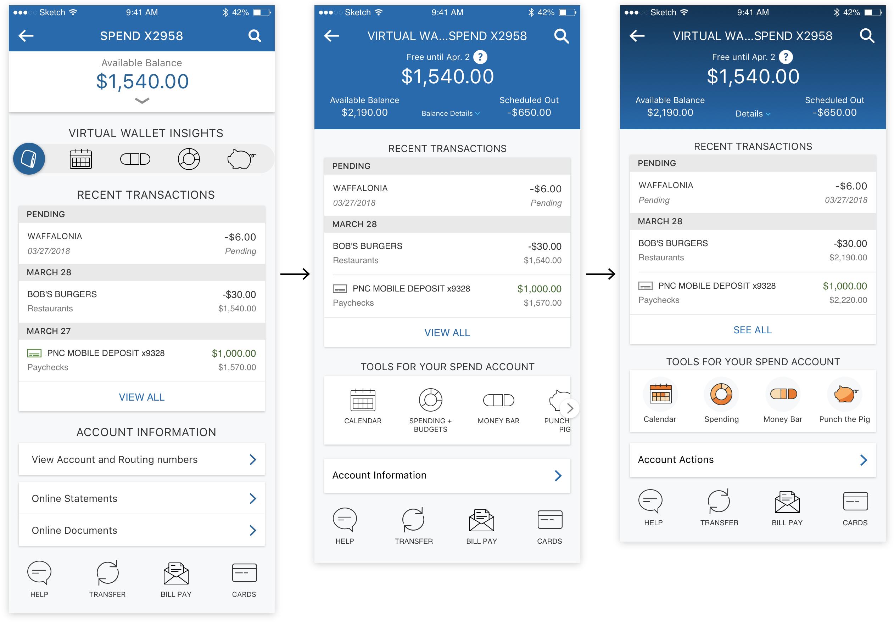

Redesigning Virtual Wallet accounts in mobile
Challenge
Redesign Account Activity in PNC’s mobile app to incorporate additional content for Virtual Wallet accounts.
Outcome
New insights and banking tools included for VW accounts, as well as improved hierarchy and usability for all accounts in the app.
RoleDesign Lead
Team Product Manager (VW team), Developer Team
Overview
This project was part of a larger initiative to combine PNC's two separate apps: one for “general” customers, and one for customers with Virtual Wallet.

The PNC app provides basic account info (i.e. balance, account number), while the VW app supports additional functionality for banking tools included with the VW product. Poor marketing caused customer confusion about which app to download. To simplify PNC's mobile banking experience, the PNC app team and VW team worked together to bring VW features into the PNC app.
My task was to incorporate new content into the Account Activity section.
Research
Initial Interviews
I recruited friends and colleagues about their general use of Account Activity and financial management. I found that everyone banks differently, from spending habits to use of banking tools. However, one common thread was that they checked Account Activity to see what else they might need to do (pay bills, transfer, etc.). Thus, I determined that in my redesign, users should be able to easily:
- View financial activity
- Navigate to other banking tasks

Target User
Because I found user needs to be so divserse, I created a target persona to help focus my designs.

Profile
- Age: 18-60
- Middle class workers & families
- Rents or owns a home
- Tech-savvy
User Needs
- Be financially responsible (i.e. pay bills)
- Save for short- and long-term financial goals
This user is often busy and appreciates the ability to bank on-the-go. He likes banking with the VW tools, but has the PNC app instead of the VW app where the tools are.
I'd use my [VW tools] more, but I have to go on the computer to do anything.
Design
Organizing Content
I performed tasks like card sorts and paper prototype tests to learn about customers' mental models of their VW tools and accounts. This process involved bottom-up sorting by users, as well as testing top-down tool sets that I designed for each VW account type.


Development
To test UI components and micro-interactions, I started moving into digital prototypes. A few early-stage wireframes:


Below are two mid-stage prototypes I compared. They have the same content, but grouped across 3 pages vs. on a single page. Version B also features a collapsible tool bar:
Developing on Version B, which tested better, I refined typography, visuals, layout, etc. For example:
For the tool icons, I designed them to match the style of existing icons in the app. I borrowed colors from VW brand guidelines to color-code each account's tool set, lending them familiarity for VW customers in a new app.
Final Screens
Below are the final pages for each of VW's account pages. Each account serves a different role (checking, checking with interest, high-yield savings, and credit card) so they feature unique tool sets designed to support their purposes.


User Flow
This flow shows the key Account Activity screens and how they connect. Scroll down for more detail on what I changed on each screen.

Account Page
- Improved visual hierarchy on the page
- Introduced the "tool bar" component, and designed the interaction for the expanding widget


Account Details
- Hid non-essential clutter
- Added lines for better scanning


Transactions
- Introduced VW-exclusive “Category” detail
- Added headers to break up days
- Expanded to full width
Transactions Details
- Introduced pattern for “Edit category” functionality
- Layout allows for future detail items
Learning Outcomes
- Working closely with PM’s and developers
- Planning MVP states
- Designing for edge cases and error states
- Collaborating with internal teams about coexisting products
- Rapidly prototyping with Sketch, InVision + InVision Studio